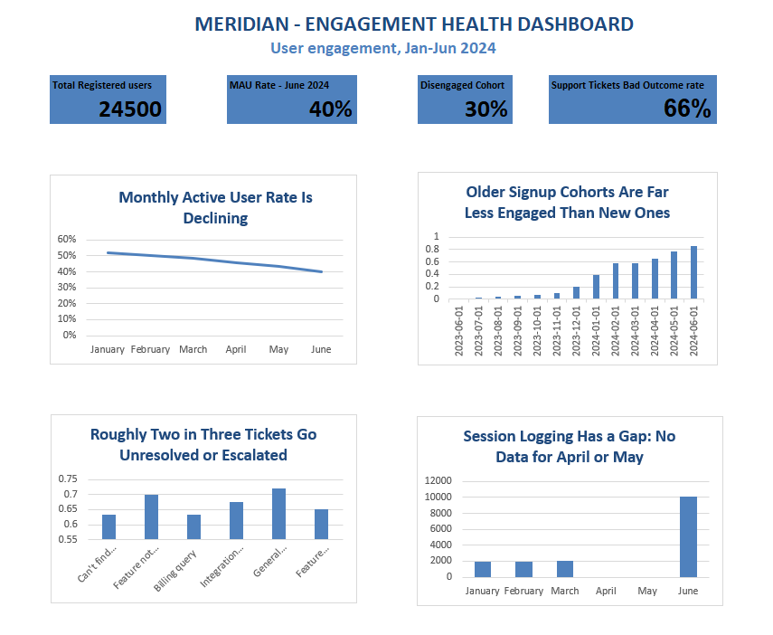

Business Problem Meridian's product team needs to know whether falling engagement is a pricing problem, a market problem, or a product/support problem, because the fix is different in each case. This analysis was scoped to answer: who is disengaging, does it correlate with plan or geography, and is there a measurable link to the support experience?

1. Engagement is declining steadily, month over month Month Active Users MAU Rate January 12,740 52.0% February 12,250 50.0% March 11,890 48.5% April 11,200 45.7% May 10,600 43.3% June 9,800 40.0% Meridian lost 12 percentage points of MAU rate in six months, with no month showing recovery. At this rate, engagement would continue falling well below 40% within another two quarters if nothing changes. 2. Plan type and country do not explain it If disengagement were a pricing problem, cheaper or more expensive plans would show different behavior. They don't: Plan Users June Active Rate Avg. Active Months (of 6) Free 6,211 39.1% 2.74 Starter 6,163 40.0% 2.78 Professional 6,087 40.5% 2.83 Enterprise 6,039 40.4% 2.82 Country tells the same story, every one of the six countries in the dataset (Netherlands, Germany, Ireland, United Kingdom, Spain, France) falls between 39.2% and 40.6% June active rate. A spread that tight, across every plan and every country, rules out plan and geography as the driver. 3. Tenure is the driver: engagement fades the longer someone has been a customer Grouping users by signup month tells a very different story than plan or country. Users who signed up in June 2023 were active only 0.08 of a possible 6 months by June 2024, essentially gone. Users who signed up in December 2023 or January 2024, who by June 2024 have also had a full 5-to-6-month window to be observed were active only 1.19 and 2.30 months respectively, still far below users who signed up more recently. This is not simply an artifact of newer users having had less time in the data window; even cohorts with a full observation window show progressively lower engagement the earlier they signed up. In practical terms: whatever hooks a new user into Meridian in month one wears off, and nothing is bringing users back after that. This reframes the problem from "who is Meridian losing" (a demographic question) to "when does Meridian lose them" (a lifecycle question) which points toward onboarding, habit formation, and re-engagement work rather than pricing or regional strategy. 4. Support is failing broadly, not in one category Category Tickets % of All Tickets Unresolved/Escalated Rate Avg. Resolution (mins) Can't find what I need 838 29.9% 63.4% 90.1 Feature not working as expected 580 20.7% 69.8% 92.0 Billing query 558 19.9% 63.3% 78.6 Integration issue 419 15.0% 67.5% 80.3 General enquiry 204 7.3% 72.1% 60.5 Feature request 201 7.2% 65.2% 64.5 Across all 2,800 tickets, 66.1% end in escalation or non-resolution, and that rate barely moves between categories (63%–72%). Resolution time doesn't explain it either, tickets that get resolved take about the same time (81.5 minutes) as ones that don't (83.7 minutes). This pattern looks like a support process or capacity issue affecting every ticket type equally, rather than a handful of hard problems dragging the average down. The largest single category, "Can't find what I need," is a navigation/UX complaint, not a bug report, and it's the single biggest reason customers contact support at all. 5. The most severely disengaged group is large and worth re-verifying 7,350 users (30.0% of the entire 24,500-user base) signed up on or before January 31, 2024, and have not logged in since April 1, 2024, a 90-day-plus silence. Notably, this figure equals 100% of everyone who signed up in that window; every established user in the dataset falls into the quiet group. A spread that perfectly uniform is unusual for real customer behavior and should be re-verified against Meridian's production login data before being used in a business decision, it may be an artifact of how this sample dataset was generated rather than a literal real-world rate. Even so, the underlying magnitude (roughly 3 in 10 customers going dark) is consistent with the broader MAU decline and is unlikely to be entirely a data artifact. "Note: no session data was logged for April and May 2024, so trends for those months should be read with caution."
Recommendations • Build a lifecycle-based re-engagement program, not a plan or region-based one. Since tenure, not plan or country predicts disengagement, target outreach and win-back campaigns by "months since signup," starting before day 90 when users are still recoverable. • Treat the support unresolved/escalated rate as a company-wide process problem. A 66% bad-outcome rate spread evenly across categories points to staffing, tooling, or workflow investigate the support process itself rather than category-specific fixes. • Fix the "Can't find what I need" problem at the product level. It's the top ticket category and a navigation issue, solving it in-product (better search, clearer onboarding, in-app guidance) would reduce ticket volume and may directly improve early retention. • Do not spend budget on plan-tier or region-specific retention fixes for this problem. The data rules both out as causes; that budget is better spent on onboarding and lifecycle work. • Before presenting the 30% disengagement figure externally, confirm it against Meridian's live login data and fix the April/May session-logging gap so future analysis doesn't inherit the same blind spot.
Conclusion Meridian's engagement decline is real, steady, and not explained by pricing or geography. It is best explained by what happens (or doesn't happen) to a customer in their first few months, compounded by a support experience that fails two-thirds of the time no matter what the customer asks about. The clearest next step is a lifecycle-focused retention effort paired with a support process review backed by cleaner session-logging data than Meridian currently has.